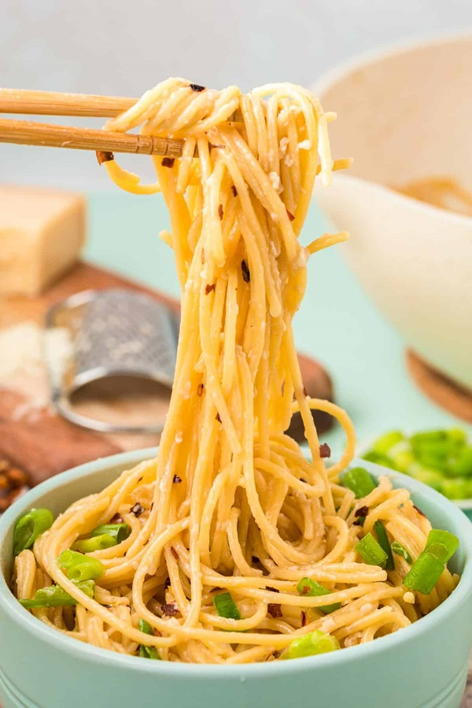

Garlic Noodles

Comes together very quickly, and has a punch of garlic and umami flavors
Ingredients
- 0.5 lb (220g) Spaghetti noodles
- 12 cloves garlic
- 3 TBPS butter
- 2-3 tsp soy sauce
- 2-3 tsp fish sauce
- 2-3 tsp oyster sauce
- Pecorino or parmesan cheese, grated
- Scallions (optional)
- Bottarga, grated (optional)
Steps
- Cook pasta without salt until just under al dente
- Meanwhile, smash garlic in morter and pestle with a little salt to form a paste
- Add butter to pan udner medium low and melt
- Add garlic to pan, and cook but do not let brown
- Add a few tsp of soy sauce, fish sauce, and oyster sauce
- Add noodles to pan, including a small bit of the pasta water, and blend together
- Add more pasta water if too tight
- Plate, and add chopped scallions and grated bottarga (if using)